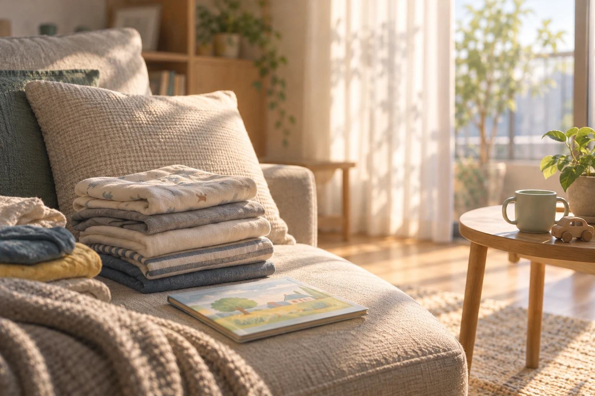
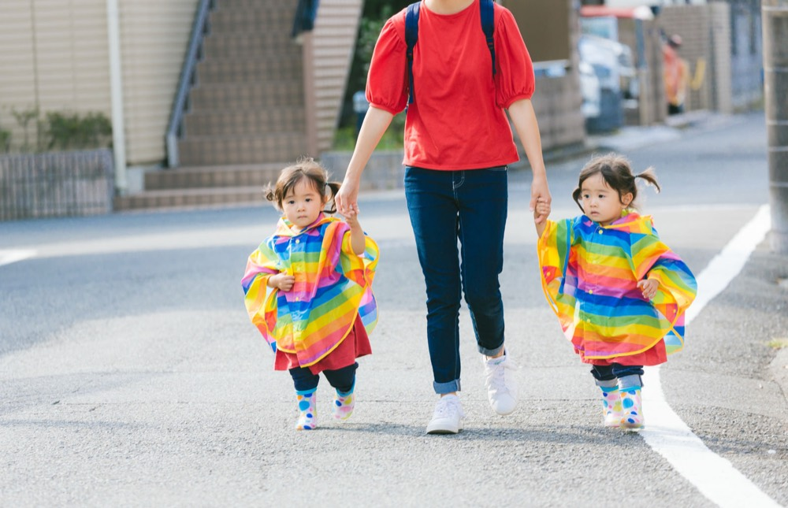

洗濯物をたたみながら、ふと手が止まることがあります。子どもの服が、もう小さくて着られなくなっていると気づいたときです。80cmのタグを見るたびに、ついこの間まで抱っこしていた重みを思い出して、少し胸がぎゅっとなるのです。
子育てを振り返って気づいたこと
必死だった日々は、いつも記憶が曖昧です
子どもが小さかった頃のことを思い出そうとしても、不思議と細かい記憶があまり残っていません。妻と交代で対応していた、夜中2時間おきの授乳や夜泣きも、離乳食を10種類近く試しては毎回拒否されて落ち込んだ日々のことも、はっきりとは思い出せません。ひとつひとつの出来事としてではなく、ただ「必死だった」という感覚だけが残っています。
きっと、あの頃は目の前のことをこなすだけで精一杯だったのでしょう。仕事から帰るとすぐ妻から育児のバトンを受け取る毎日で、振り返る余裕もなく、ただ一日一日を乗り越えていた。スマホの写真フォルダを見返しても、生後半年から1歳になるまでの写真が数えるほどしかありません。後になって「もっとちゃんと見ておけばよかった」という気持ちが湧いてくるのは、そのためかもしれません。
小さくなった服が教えてくれること

子どもの服を整理していると、いつのまにか着られなくなったものが次々に出てきます。60cm、70cm、80cmと、タグのサイズは着実に上がっていきました。この服を着ていた頃、子どもがどんな顔をしていたのか、記憶をたどっても、はっきりとは浮かびません。
それでも、その服を手に取った瞬間だけは、たしかにあの頃の空気を思い出すのです。よだれで黄ばんだ襟や、離乳食のシミが残ったままの袖口。忙しくて写真もあまり撮れていなかった時期の記憶が、こうして服を通してよみがえることがあります。暮らしの中には、こんなふうに気づかないうちに積み重なっていくものがあるのだと感じます。
必死だったことは、無駄ではありませんでした
当時は余裕がなくて、うまくできていないことばかりだと感じていました。仕事終わりに夜泣きに付き合いながら、明日の保育園の準備が終わっていないことに焦る。そんな夜が何度もありました。けれど、今こうして子どもの成長を振り返ると、必死だったあの日々があったからこそ、今の暮らしがあるのだと分かります。
完璧にできていなくても、必死に向き合っていた時間そのものに意味があったのだと、今なら思えます。当時の自分に伝えられるなら、「それでよかったんだよ」と言ってあげたい。
今日という日も、きっといつか同じように
今、目の前で過ぎていく毎日も、きっと後から振り返れば「必死だった」の一言に収まってしまうのだと思います。せめて今日は、少しだけ立ち止まって子どもの顔を見ておきたいのです。
洗濯物をたたむ手を止めて、小さくなった80cmの服をもう一度そっとたたみ直しました。
この記事について
子育て・暮らしジャンルにおける、一人称の体験談エッセイの執筆サンプルです。共感を軸にした構成・語り口で執筆しています。
同じ流れで、ご依頼のジャンル・トンマナに合わせた体験談記事を執筆します。
執筆のご相談はこちら